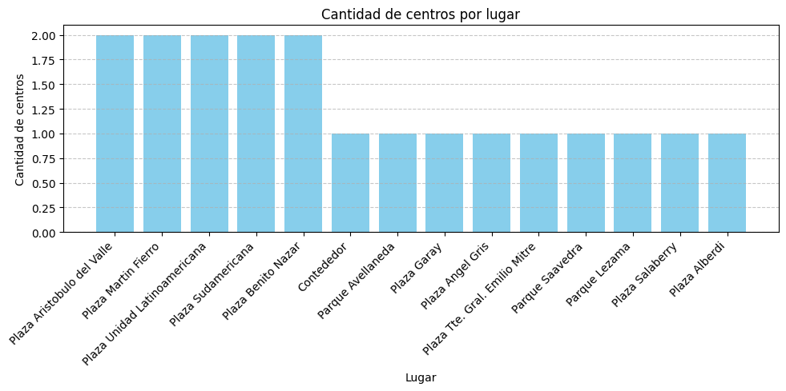

1. Atenciones por Día
Utilizamos un gráfico de líneas para mostrar la evolución temporal de las atenciones programadas a lo largo de las fechas.n.

2. Servicios Ofrecidos
Optamos por un gráfico de torta para los servicios ofrecidos porque hay un número limitado de categorías. Esto permite ver de forma clara la proporción de cada tipo de servicio, facilitando la comparación rápida de su popularidad.

3. Horarios de Atención
Usamos otro gráfico de torta para los horarios de atención, ideal cuando queremos destacar rápidamente qué porcentaje del total corresponde a cada franja horaria. Así se identifican de forma intuitiva los horarios con mayor concurrencia.

4. Cantidad de Veterinarias por Lugar
El gráfico de barras es perfecto para comparar la cantidad de atenciones en los distintos lugares de la ciudad. Las barras permiten visualizar valores absolutos de manera intuitiva y comparar directamente qué zonas tienen más o menos servicios.
